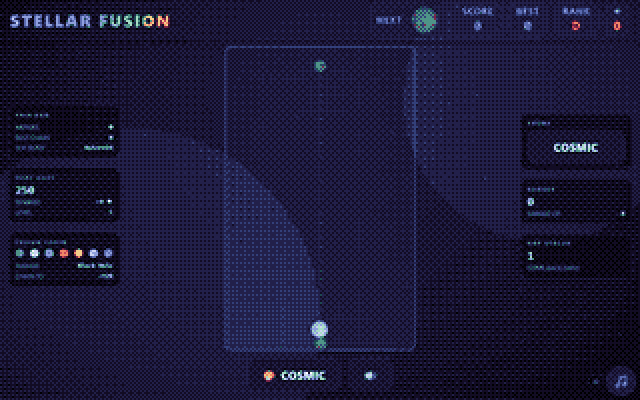
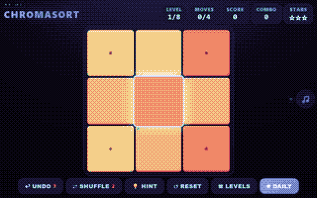
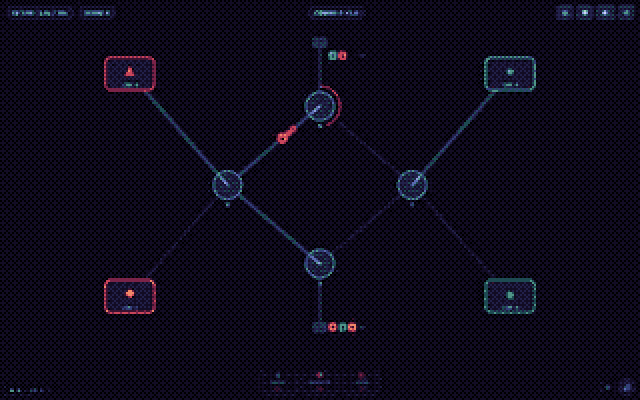
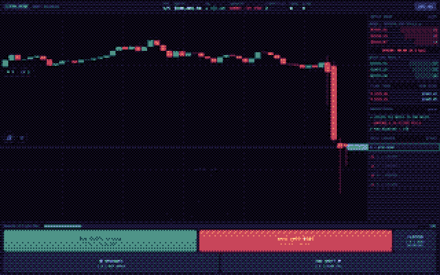
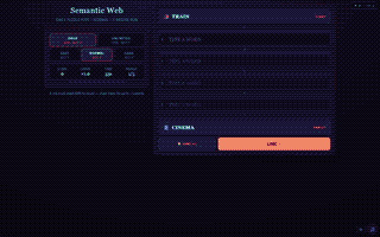
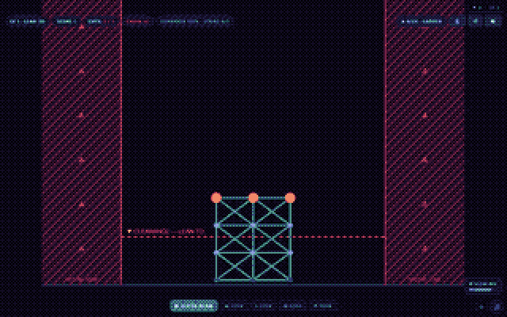

Free, with ads
Ships to web portals (CrazyGames, Poki, GameDistribution) once ads turn on.
Marketplace
Nothing sells yet. Select a game to check its status and release plan.
Games
Arcade release plan
Each arcade game compiles from one source file into three editions.
Ships to web portals (CrazyGames, Poki, GameDistribution) once ads turn on.
Strips all ads and portal calls at build time. Ships to CrazyGames Basic Launch and external licensees.
Wraps either the paid ad-free edition or the free ad-supported edition for Google Play.
Status: I still need to make covers, record preview videos, test devices, check store fees, and upload builds.
The arcade
Each game runs from one file with no external requests. Open the arcade page.





